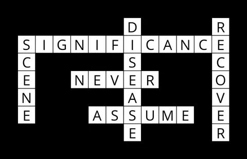
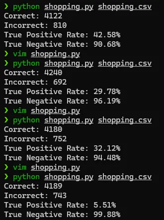
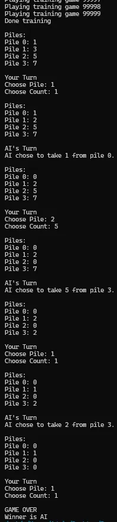
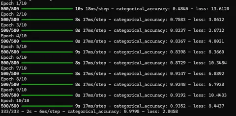
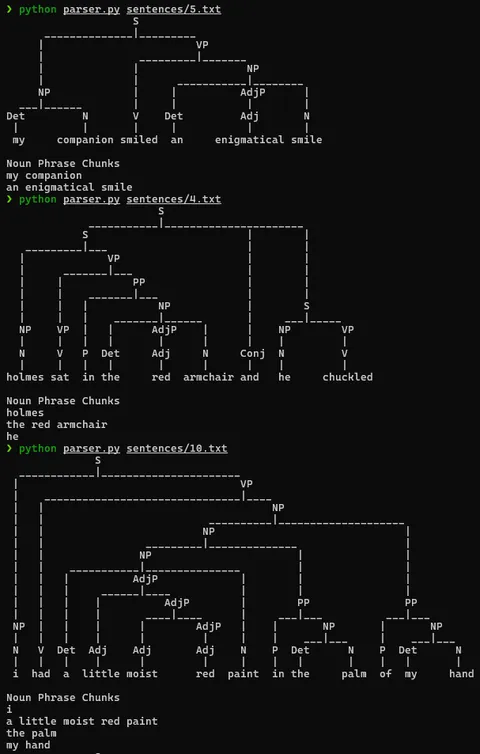
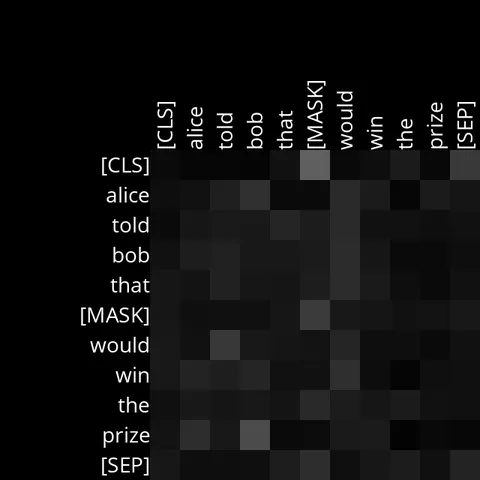

What Comes After CS50x? Discover CS50 AI - 2
By Sukalyan RoyPublished Updated 8 min read

We’re halfway there, we started this journey together and went through several projects that most people won’t even consider “real” AI.
Now it’s time to change that.
In this post we will cover topics all the way from Optimization to Supervised, unsupervised learning, and Reinforcement learning for playing games, to Computer vision in the domain of traffic management, and end it with discussions of language and Attention mechanisms.
TL;DR #
-
This is the continuation of my CS50 AI notes after finishing CS50x.
-
The course moves from broad AI ideas into more concrete search, logic, probability, learning, and language problems.
-
The main value is not just the algorithms, but learning how to model a problem precisely.
-
Some topics feel mathematical at first, but the projects make them easier to understand.
Week 3 #
This week is all about optimization algorithms, and the way they are relevant in search based AI.
Most of the topics were again familiar to me, but this made them much more clearer.
One new thing that i learned here was simulated annealing, which is a phrase I had heard alot but never knew what it was.
Simulated Annealing is basically simulating the search as if it was a physical system with some heat that is cooling down. We start with high temperature and slowly lower it with iterations.
What does this temperature refer to? The risk tolerance of the search. The higher the temperature is, the more likely the search is to select a worse option, in the hopes of reaching a globally better state later on.
Crossword #

This was genuinely a mess to keep track of, constantly kept forgetting the fields of the classes.
With a little :vsplit in vim, i had several parts of the same file displayed for a while until things started to make sense. And i’d highly recommend that you do this too, but if you can keep the whole struct in your mind, that’s even better.
The concept of Arc Consistency is the main new thing here, rest of the functions were just finding out ways to loop over the data and remove inconsistencies. Much like we did in the knowledge base project for knights/minesweeper.
I genuinely spent over 10 days stuck at just the AC3 function.
Pro tip: Check your revise function. It will pass all unit tests even with a fundamental problem in it, and it won’t resurface till you get stuck on ac3.
Also learned how to do custom sorts based on lambda functions, something i had done in C++ before using cmp but never in python. (Pro tip, if you want something sorted according to criteria A then B then C, write the sorts in opposite direction C then B then A)
The backtracking ideas is basically select, recurse, unselect. Very standard pattern. This combines all the functions that we have written so far and fills out our crossword.
Week 4 #
This was such a succinct summary of all these important topics, most of which you will see in an Intro to ML class. I’d recommend this lecture to almost everyone, standalone outside of this course.
There’s also a new term for reinforcement learning that i’m seeing for the first time, the lecture calls it Q learning, and the formulas are quite intuitive, not so sure about their implementation.
Shopping #

This is just a standard supervised classification problem, and scikitlearn makes things pretty easy for us on the model front.
The structure of the code is quite interesting as most of us are used to Pandas dataframes for managing datasets instead of manually parsing them into “evidences” for rows. Even though the problem page says we are allowed to use pandas, let’s see if i can do this without.
The main thing that I learned here is about Sensitivity and Specificity (though i still mix up the two terms).
The rest of the code was straightforward but wrote the wrong formulas for evaluate function.
One interesting thing to notice here is that, as i kept increasing number of neighbors for model training, the model became majority label biased.
Since most of the revenues are False, with larger number of neighbors, even Positives get outvoted and we get really good results for True negative. But for lower values we’ll get good performance for True positives too.
Nim #

This is a game i've never had heard of in my life before this project.
Quite fun to play actually, the rules are simple. Keep removing items and the last one to remove anything loses.
The implementation was relatively straightforward and the funny part is that if you just follow the specifications properly, you can finish the whole thing without once thinking about the game itself.
One interesting thing i learned from this is that you can use tuples and other objects as Keys for a python dictionary.
Apart from that, there's not much to it. The real ideas lie behind the formula of Q learning itself. Which is basically a loss function model, as we have all the components we'd use in other, more useful models.
We have learning rate, we have old versus new utility, and we run everything for a certain number of iterations.
Week 5 #
This week's lecture is, again, a really good introduction to the topics. I had watched videos/courses on almost all of them which made it easier for me to understand and even skip some parts without problem here. But if you're seeing these topics for the first time in your life, it might be a bit of an information overload.
The main ideas here are that of the Neural network, and the different ways we train it, different ways to optimize it, to prevent overfitting, etc etc.
Then it deals with Convolutions, which is a really simple but interesting topic. Once you have gone through the lecture, definitely try the Convolution videos by 3B1B.
Traffic #

This week only has a single project, and the focus here is more on exploring and experimenting with the parameters of libraries rather than implementing something from scratch.
https://github.com/a-anjos/python-opencv/blob/master/cv2cheatsheet.pdf <- very important if you want to stay sane working with openCV
I learned a lot about python's os module and how to parse and manage paths.
At first, it was confusing to navigate the Keras docs but the search function helped alot. Most of the classes work really well by default, you just need to know the relevant parameters you want to tweak.
So, to start off with it, i went with a simple convolve -> pool -> flatten -> dense -> dropout -> output layer structure.
But i noticed that the last dense layer before the output has less parameters than the output itsellf, so i increased that, and increase all the other filter sizes as well, 192 then 128 then 64 etc. This made the model perform worse at first but by the final epoch it performed better.
Finally i got upto 97% accuracy on purely CPU training, because for some reason even though my gpu is recognized inside WSL, tensorflow could not find it.
This forms a nice framework upon which i could train almost any image model ever, as long as i can get the dataset to conform with the load_data function (or vice versa)
Week 6 #
The lecture was kinda underwhelming to be honest, considering the amount of content the others had. Still, it introduces us to a few really interesting things about Language and how to represent it using computers and it's rigid rules.
First time using the nltk library, and also the first time seeing the transformer's attention heads being rendered in my device, as before this i'd only seen them in youtube videos.
Parser #

The practical use of things learned here is usually less in AI, due to transformers being more prevalent these days; The use is more in Compiler Design, as these Formal Languages are used to design how the programming language parser should work.
Here as well, we use the library to parse the english language based on a set of Terminals provided by the CS50 Team and we are supposed to design the nonterminal rules that would guide our parser.
Coding up a developed grammar is relatively easier than coming up with the grammar itself.
Most of the coding part in this project is doable if you go through the nltk library, and the specifications even hint at the exact methods you might need.
But the real struggle starts when you are supposed to develop the non terminals.
I consider myself fairly good at english overall, including english grammar, but formal representation of it has been really confusing for me.
Attention #

The goal of this project was less about making a transformer and more about analysing the behavior of a built one.
The transformer was imported from huggingface. Then there was some functions to write that used the fields from the library, and then generate the visualization from it, that you see in the GIF above.
Important note: At least in the version of CS50 AI that i took, the course hasn't been updated in a while and was oblivious to the deprecation of tensorflow support for the transformers module. So remember to use the 4.4.0 version of transformers if the course isnt updated to use pytorch when you are doing it.
The main thing that i learned here, and this might seem a bit anticlimactic, is that transformers encode information in weird ways. Some patterns are observable like one word paying attention to the next, which was shown in the lecture itself.
Also the attention between Nouns and adjectives and other parts of the sentences often seemed pretty unintuitive.
Apart from that, for the analysis.md I experimented with certain sentences and saw how the attention between subjects and verbs are happening in certain heads.
Overall, interpretability is extremely important for these models but practically nearly impossible to do manually by looking at the layers, as real models will have billions of these even at the most basic levels.
We need more robust methods.
Conclusion #
So, this was CS50 AI.
I really really liked this course, almost i dare say, more than the original CS50x. Learned a lot of different things across domains, and built a base for experimentation, that i am planning to do another Blog on soon.
I have a lot of topics in the works right now, stay tuned for many really cool posts!
If there are any specific topics you want to read about, do let me know in the comments.
If the comment section is not working, do dm me or mail me with suggestions and honest reviews.